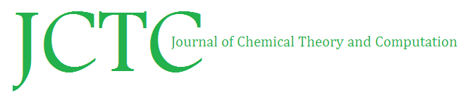
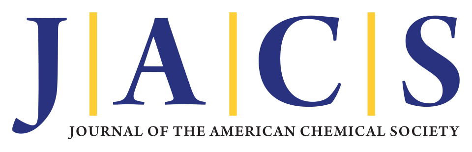

Home
Publications
CV
Repositories
News
Publications + Preprints
Publications/Preprints from graduate studies
10
Designing an Artificial Metalloenzyme for Re (I)-catalyzed CO2 Photoreduction
ChemRxiv
P Ajmera
, L Farley, N Minnetian, R King, H Jayasekara, S Chaturvedi, ... | ChemRxiv, 2026
Cited by 0
9
Molecular Basis of Mitochondrial Complex I Disruption by m. 14484T> C-Induced Leber Hereditary Optic Neuropathy
bioRxiv
P Ajmera
, D Guion, S Barnes, AA Sadun, AN Alexandrova | bioRxiv, 2026.01. 28.701874, 2026
Cited by 1
8
A protein-based model of carbon monoxide dehydrogenase exhibits tunable covalency across cluster oxidation and ligand-bound states
LC Lewis, P Badve, IP Vaca,
P Ajmera
, Y Lee, AN Alexandrova, KK Meier, ... |
Chemical Science 17 (22), 11042-11061, 2026
Cited by 3
7
PyCPET─Computing Heterogeneous 3D Protein Electric Fields and Their Dynamics
P Ajmera
, S Vargas, SS Chaturvedi, M Hennefarth, AN Alexandrova |
Journal of Chemical Theory and Computation 21 (8), 4299-4308, 2025
Cited by 3

6
Distinct Electric Fields Enable Common Catalytic Function in Structurally Diverse Enzymes
SS Chaturvedi, A Goswami, J Qian, A Petersen,
P Ajmera
, ... |
Journal of the American Chemical Society 147 (35), 32225-32237, 2025
Cited by 15

5
Methods for theoretical treatment of local fields in proteins and enzymes
ME Eberhart, AN Alexandrova,
P Ajmera
, D Bím, SS Chaturvedi, S Vargas, ... |
Chemical Reviews 125 (7), 3772-3813, 2025
Cited by 40
4
Directed Evolution of Protoglobin Optimizes the Enzyme Electric Field
SS Chaturvedi, S Vargas,
P Ajmera
, AN Alexandrova |
Journal of the American Chemical Society, 2024
Cited by 25
3
Coenzyme Q10 trapping in mitochondrial complex I underlies Leber’s hereditary optic neuropathy
JT Fuller III, S Barnes, LA Sadun,
P Ajmera
, AN Alexandrova, AA Sadun |
Proceedings of the National Academy of Sciences 120 (39), e2304884120, 2023
Cited by 23
Publications before graduate studies
2
CS-annotate: a tool for using NMR chemical shifts to annotate RNA structure
K Zhang, K Abdallah,
P Ajmera
, K Finos, A Looka, J Mekhael, AT Frank |
Journal of Chemical Information and Modeling 61 (4), 1545-1549, 2021
Cited by 6
1
Dynamic competition between a ligand and transcription factor NusA governs riboswitch-mediated transcription regulation
A Chauvier,
P Ajmera
, R Yadav, NG Walter |
Proceedings of the National Academy of Sciences 118 (47), e2109026118, 2021
Cited by 47